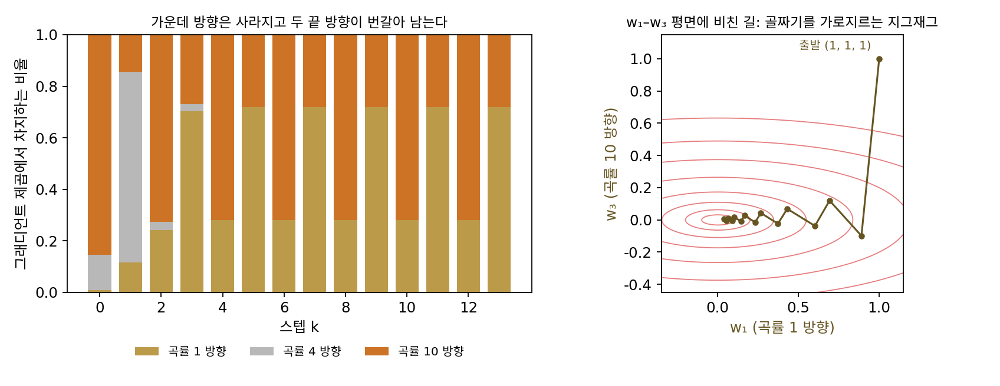
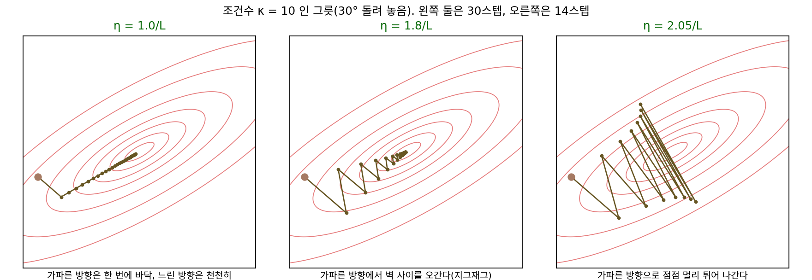
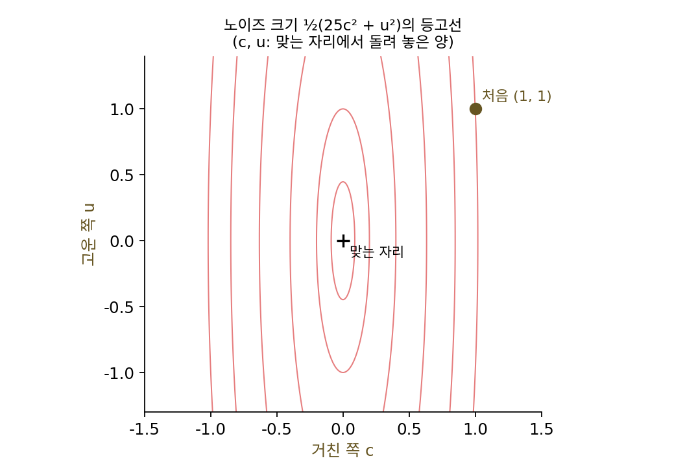
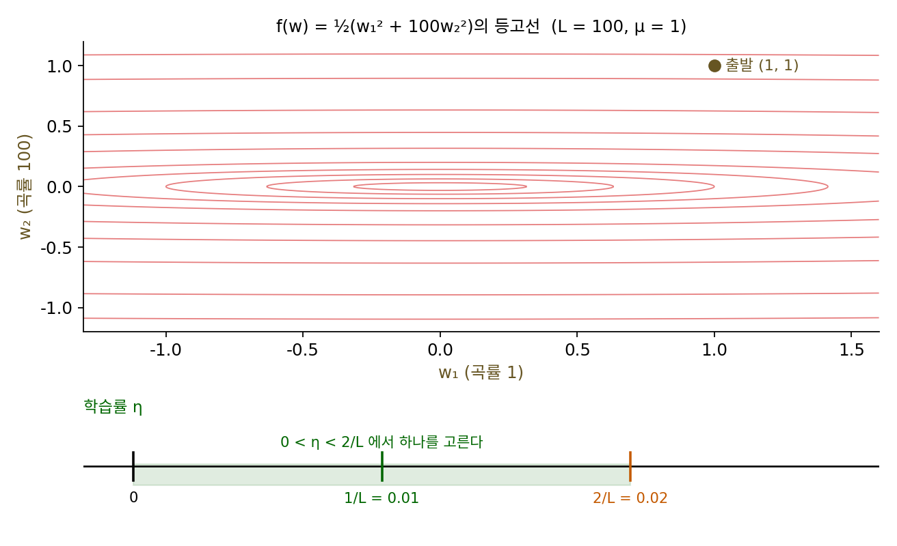
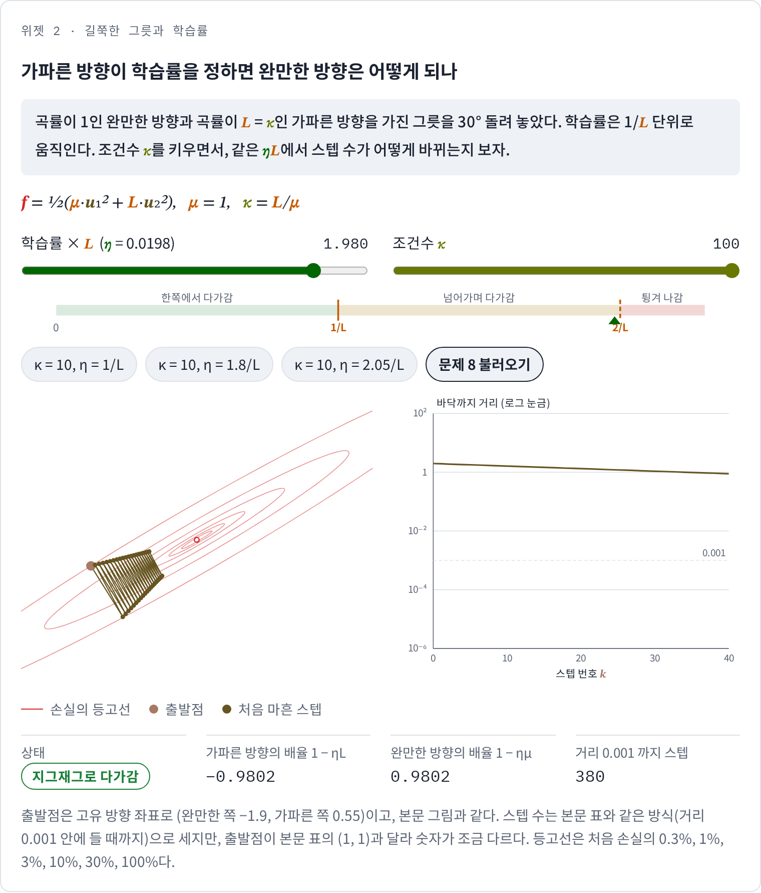
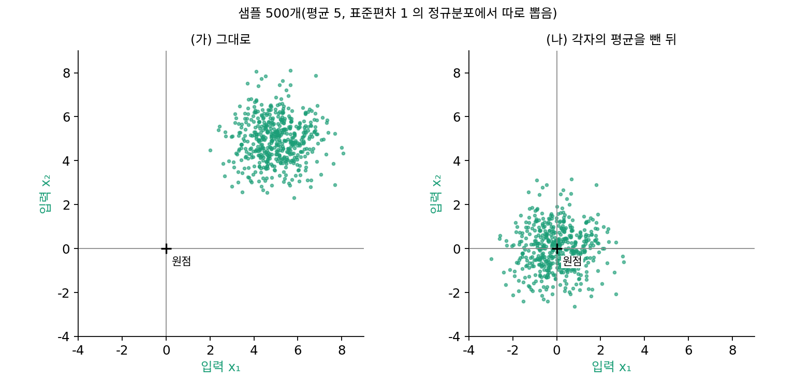

조건수: 길쭉한 골짜기에서는 왜 스텝이 늘어날까
학습률의 상한 2/L은 손실이 가장 가파르게 휜 방향이 정했지만, 파라미터가 여럿이면 방향마다 곡률이 다르다. 가파른 방향에 맞춰 학습률을 작게 잡으면, 완만한 방향에서는 그 작은 학습률로 걸어야 한다. 이 장의 물음에서 본, 어떤 파라미터는 금방 자리를 잡고 어떤 것은 한참 기어가는 일이 여기서 생기는 것 같다. 그렇다면 완만한 방향은 얼마나 느려지고, 그 느림은 학습률을 잘 고르면 없앨 수 있을까?
역사: 두 방향 사이를 오가는 가장 가파른 내리막
코시의 둘째 선택처럼 스텝마다 그 방향의 최솟값까지 가는 방법은 이론상 가장 욕심 많은 경사하강이다. 이 방법이 실제로는 느리다는 것이 1950년대에 수학적으로 드러났다. 일본 통계수리연구소에서 일하던 아카이케 히로츠구(赤池弘次, Hirotugu Akaike)는 1959년 논문 「확률 분포의 잇따른 변환과 그것을 최적 경사 방법의 분석에 쓰기」에서 2차 함수 위의 이 방법을 따졌다. 그가 보인 것은, 스텝을 거듭하면 그래디언트의 방향이 결국 두 방향 사이를 번갈아 오가게 되고, 그 두 방향은 가장 크게 휜 방향과 가장 작게 휜 방향이 만드는 평면 안에 있다는 것이다. 스텝마다 그 방향에서는 최선을 다하는데도 길은 골짜기를 가로질러 지그재그로 꺾인다. 아카이케는 뒤에 모델을 고르는 기준(AIC)으로 이름이 더 알려졌다.


스텝마다 그 방향에서 최선을 다하는데 느리다는 게 이상해요. 그리고 느린지는 등고선 위에 길을 그려 보면 바로 보이잖아요. matplotlib 몇 줄이면요.

그림으로 보이는 건 그려 본 그 함수 하나예요. 모든 2차 함수에서 느리다고 말하려면요? 파라미터가 수십 개면 등고선을 그릴 수도 없고요.

아, 그림 하나로는 다른 함수까지 말할 수가 없네요. 예를 아무리 많이 돌려도 증명이 되지는 않고요.

그러면 함수마다 다른 걸 빼고 공통인 걸 봐야 할 것 같아요. 2차 함수면… 곡률이 다른 방향들로 나눠서, 그래디언트가 방향마다 얼마씩 들어 있는지를 따라가 볼까요?

아카이케가 바로 그렇게 했어요. 방향마다 들어 있는 비율을 확률 분포처럼 보고, 한 스텝이 그 분포를 어떻게 바꾸는지 따라갔어요. 논문 제목의 「확률 분포의 잇따른 변환」이 그 뜻이에요.

그 분포가 결국 가장 크게 휜 방향과 가장 작게 휜 방향 두 곳에만 남는다는 거네요. 그래서 그 두 방향 사이를 오가고요.

그럼 얼마나 느린지도 그 두 방향의 곡률로 정해질까요? 두 곡률이 얼마나 다르냐에 따라서요.
곡률이 다른 두 방향
가장 간단한 경우로, 파라미터가 둘이고 두 방향의 곡률이 각각 1과 κ(카파)인 그릇 f(w) = ½(w₁² + κw₂²)을 보자. 두 방향이 서로 섞이지 않으므로 경사하강은 방향마다 따로 포물선을 내려가고, w₁ 방향의 배율은 1 − η, w₂ 방향의 배율은 1 − ηκ다. 가장 큰 곡률이 L = κ이므로 학습률은 2/κ보다 작아야 한다. 가파른 방향을 한 스텝에 끝내는 η = 1/L = 1/κ로 잡고, (1, 1)에서 출발해 바닥까지 거리 0.001 안에 들기까지의 스텝 수를 세면 다음과 같다.
| κ | 완만한 방향의 배율 1 − 1/κ | 스텝 수 | 스텝 수 ÷ κ |
|---|---|---|---|
| 1 | 0 | 1 | 1.00 |
| 10 | 0.9 | 66 | 6.60 |
| 100 | 0.99 | 688 | 6.88 |
| 1000 | 0.999 | 6905 | 6.91 |
κ가 열 배가 될 때마다 스텝 수도 거의 열 배가 된다. 가파른 방향은 첫 스텝에 끝나고, 남은 스텝은 모두 완만한 방향이 배율 1 − 1/κ로 기어가는 데 쓰인다. 거리를 1/1000로 줄이려면 (1 − 1/κ)ᵏ = 0.001에서 스텝 수 k ≈ κ × ln 1000 = 6.91κ이고, 마지막 칸의 6.91이 바로 ln 1000이다.
이 비 κ = L/μ, 곧 가장 크게 휜 방향의 곡률을 가장 작게 휜 방향의 곡률 μ(뮤)로 나눈 값을 조건수 (골짜기가 얼마나 길쭉한가 / condition number)라 한다. 등고선으로 그리면 조건수는 타원의 긴 지름과 짧은 지름의 비의 제곱이다. 조건수가 1이면 그릇이 둥글어서 어느 쪽에서 출발하든 그래디언트가 곧장 그릇 바닥을 가리킨다.
둘째 식이 이 절의 핵심이다. 학습률은 가파른 방향 때문에 2/L보다 작아야 하고, 그러면 완만한 방향의 배율은 1 − 2μ/L = 1 − 2/κ보다 작아질 수 없다. 학습률을 아무리 잘 골라도 완만한 방향은 스텝마다 대략 1/κ의 몇 배만큼씩만 줄어든다. 그래서 고정된 학습률의 경사하강이 걸리는 스텝 수는 조건수에 비례한다.
학습률을 1/L과 2/L 사이로 키우면 무슨 일이 생길까? 가파른 방향의 배율 1 − ηL이 음수가 되어, 그 방향에서는 골짜기의 양쪽 벽을 오가게 된다. κ = 10에서 η = 1.8/L로 잡으면 가파른 방향은 −0.8, 0.64, −0.512, 0.41, …로 오가고, 완만한 방향은 0.82배씩 줄어서 스텝 수는 66에서 36으로 준다. 2/L에 더 다가간 1.95/L에서는 벽 사이를 오가는 움직임이 거의 줄지 않아 오히려 135스텝이 걸리고, 2.05/L에서는 벽에서 벽으로 튈 때마다 멀어진다. 아래 그림은 같은 그릇을 30° 돌려 놓고 그린 것인데, 그릇을 돌려도 경사하강의 움직임은 같이 돌아갈 뿐이다.

ML에서: 입력을 고르게 맞추기
신경망의 손실도 방향마다 곡률이 크게 다르고, 그래서 학습이 조건수만큼 느려진다. 얀 르쿤(Yann LeCun)과 동료들은 1998년 글 「효율적인 역전파(Efficient BackProp)」에서 이 분석을 그대로 적었다. 학습률이 2 ÷ (헤시안의 가장 큰 고윳값)을 넘으면 발산하고, 수렴에 걸리는 시간은 가장 큰 고윳값 ÷ 가장 작은 고윳값에 비례하므로 고윳값이 고르게 퍼진 것이 좋다는 것이다. 그들이 이 분석에서 끌어낸 처방이 입력의 평균을 0으로 빼고 분산을 맞추라는 전처리였다. 입력이 왜 조건수를 바꾸는지는 아래 문제 9에서 직접 계산한다.
문제 7. 라디오의 두 손잡이
옛 라디오에는 주파수를 크게 옮기는 거친 손잡이 c와 조금씩 옮기는 고운 손잡이 u가 있다. 노이즈의 크기가 ½(25c² + u²)이고(두 손잡이를 맞는 자리에서 얼마나 돌려 놓았는지), 처음에는 두 손잡이가 모두 1만큼 어긋나 있다. 매번 두 손잡이를 「그 손잡이를 조금 돌릴 때 노이즈 크기가 바뀌는 비율(편미분) × 비율」만큼 반대로 돌린다. 비율은 두 손잡이에 같은 값을 쓴다. (가) 비율 0.03으로 다섯 번 돌린 뒤 두 손잡이는 어디에 있는가? (나) 고운 손잡이가 너무 느리다고 비율을 0.1로 올리면? (다) 고운 손잡이가 처음 어긋난 양 1의 1%(0.01) 안에 들기까지 적어도 몇 번 돌려야 하는가?

(가)는 거친 손잡이가 0.25, 0.062, 0.016, 0.004, 0.001로 금방 맞춰져요. 그런데 고운 손잡이는 0.97, 0.941, 0.913, 0.885, 0.859라서 거의 안 움직여요. 그럼 비율을 0.1로 올려서 고운 손잡이를 빨리 돌리면 되죠.
0.1로 올리면 거친 손잡이는 한 번에 몇 배가 되죠?

1 − 25 × 0.1 = −1.5배요. −1.5, 2.25, −3.375, 5.062… 거친 손잡이가 점점 크게 어긋나요. 고운 손잡이는 0.9배씩 잘 줄고 있는데 소리는 엉망이 되겠네요.
거친 쪽 배율 1 − 25 × 비율이 −1보다 커야 터지지 않으니까… 비율이 2/25 = 0.08보다 작아야 해.
그럼 0.08 바로 아래로 잡으면 되지?
그래도 고운 쪽 배율은 1 − 0.08 = 0.92보다 작아질 수 없어. 0.079로 해도 1% 안에 들려면 56번, 0.03이면 152번이야.

이 라디오의 조건수는 얼마일까요?

곡률이 25와 1이니까 25예요. 고운 손잡이가 늦는 건 비율을 잘못 골라서가 아니라 같은 비율을 두 손잡이에 써야 해서예요. 그래서 진짜 라디오는 손잡이마다 감도를 다르게 만들어 놓은 거고요.

조별 과제에서 꼼꼼한 친구랑 대충 하는 친구한테 마감을 하나로 주면, 꼼꼼한 친구한테 맞추면 대충인 친구가 놀고, 대충인 친구한테 맞추면 꼼꼼한 친구가 밤을 새잖아요. 마감 하나가 학습률 하나, 두 친구가 곡률이 다른 두 방향이에요.
문제 8. 가장 좋은 학습률을 골라도
그릇 f(w) = ½(w₁² + 100w₂²)(L = 100, μ = 1)을 (1, 1)에서 내려간다. (가) η = 1/L로 하면 바닥까지 거리 0.001 안에 들기까지 688스텝이다. 두 방향의 배율 가운데 나쁜 쪽이 가장 작아지는 학습률은 얼마이고, 그때 스텝 수는? (나) 그 학습률은 η = 1/L보다 몇 배 빠른가? κ = 10, 1000에서도 같은 비가 나오는가? (풀어 본 뒤 위젯 2의 「문제 8 불러오기」로 확인해 보자.)

학습률만 잘 고르면 조건수 문제는 없어질 것 같아. 두 방향의 배율 |1 − η|와 |1 − 100η|를 둘 다 작게 하면 되니까.
η를 키우면 두 배율은 각각 어떻게 움직이죠?
|1 − η|는 계속 작아지고, |1 − 100η|는 0.01에서 0이 된 뒤 다시 커져요.
그럼 둘 가운데 나쁜 쪽이 가장 작은 건 언제일까요?
하나가 줄 때 다른 하나는 느니까… 둘이 같아질 때요. 1 − η = 100η − 1, η = 2/101 = 0.0198이에요. 그때 두 배율은 모두 99/101 = 0.9802예요.
돌려 보니 363스텝이에요. 688의 거의 반이요. 1.9/L로 해도 361스텝이라 거의 같고요.
반으로 줄었어요. 그럼 조건수가 10, 1000일 때도 해 볼까요?
κ = 10이면 37스텝, 1000이면 3628스텝이에요. 여전히 조건수가 열 배면 스텝도 열 배네요.
배율 (κ − 1)/(κ + 1)을 다시 써 보면 1 − 2/(κ + 1)이에요. 1/L일 때는 1 − 1/κ였고요.
둘을 견주면요?

한 스텝에 줄어드는 비율이 두 배일 뿐이에요. 앞의 숫자만 반이 되고 κ에 비례하는 건 바뀌지 않아요. 학습률 하나로는 조건수를 이길 수 없네요. 미적분 시간에 n²과 n²/2는 같은 차수라고 배운 게 이거예요.

학습률 튜닝을 열심히 해서 두 배 빨라졌다고 좋아했는데, 근본적으로 빨라지려면 그릇 모양을 바꾸든 걷는 방법을 바꾸든 해야 하는 거군요.
위젯 2에서 문제 8 설정을 불러와 학습률을 1/L 쪽으로 옮겨 가며 길이 어떻게 달라지는지 비교해 보세요.

문제 9. 입력의 평균을 빼면
입력이 둘인 선형 회귀가 있다(편향 없이 예측 = w₁x₁ + w₂x₂). 두 입력은 서로 따로 뽑았고, 각각 평균 5·표준편차 1인 정규분포에서 나온 500개다(씨앗 고정). (가) 손실의 헤시안 XᵀX/500(X는 샘플 하나의 두 입력을 한 줄로 놓고 500줄 쌓은 행렬)의 두 고윳값과 조건수는? (나) 두 입력에서 각자의 평균을 뺀 뒤에는? (다) η = 1/L로 경사하강을 하면 각각 몇 스텝이 걸리는가?

두 입력의 표준편차가 1로 똑같으니까 이미 고르게 맞춰진 거 아니에요? 조건수는 1 근처일 것 같아요.
계산해 보세요. 고윳값이 어느 방향인지도 같이요.
고윳값이 1.002와 50.60이에요. 조건수가 50.5요! 큰 쪽의 방향은 (0.711, 0.703)이라 두 입력을 같이 키우는 방향이고요.
평균이 5라서 그런 것 같아. 두 가중치를 함께 키우면 모든 샘플에서 예측이 같은 쪽으로 커지잖아.
그게 곡률이랑 무슨 상관이야?
그 방향의 곡률에 평균의 제곱이 더해져. 2 × 5² + 1 = 51쯤. 표준편차가 같아도 평균이 0이 아니면 한 방향만 가파르게 솟는 거야.
서연 학생 말대로 평균 5가 한 방향을 솟게 했다면, 두 입력에서 각자의 평균을 빼고 다시 계산했을 때 큰 고윳값 50.60은 어떻게 될까요?
고윳값이 0.9936, 1.0569로 조건수가 1.06이에요. 남는 건 샘플마다 입력이 평균에서 흩어진 정도(분산)뿐이라 둥근 그릇이 돼요. 스텝 수는 그대로 쓰면 363스텝, 평균을 빼면 3스텝이에요.
전처리에서 평균을 빼라는 게 숫자를 예쁘게 하려는 게 아니었네요. 그릇을 둥글게 만들어서 스텝을 백 배 넘게 줄이는 일이었어요. 출석 점수가 다들 95점 근처면 그 과목은 성적 차이를 거의 못 가르는 것처럼, 다 같이 큰 값은 쓸모없이 한 방향만 가파르게 만드는 거고요.